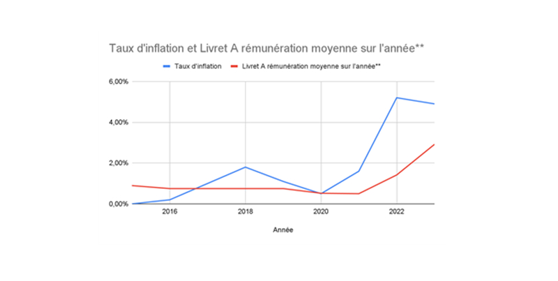

Mon parcours en investissement
Fin 2023, j’ai décidé d’investir en bourse, malgré des connaissances limitées sur le sujet. Ce domaine m’a toujours intrigué, à la fois synonyme d’opportunités et de risques, souvent perçu comme un milieu fermé.
Pour me former, j’ai commencé par lire des livres, regarder des vidéos et analyser des articles spécialisés. Mais à un moment donné,c’est en pratiquant qu’on apprend réellement.
J’ai donc fait mon premier achat en bourse : une action Microsoft. Un bon choix d’un point de vue général, mais un mauvais choix par rapport à mon profil d’investisseur. Avec le temps, j’ai diversifié mes investissements en explorant les cryptomonnaies et les métaux précieux.
Compréhension des marchés En approfondissant mes connaissances, j’ai découvert des concepts clés :
- Cryptomonnaies : blockchain, wallets froids et chauds, plateformes d’échange (exchanges). - Bourse : chandeliers japonais, indicateurs techniques, rôle des banques centrales. - Analyse macroéconomique : impact des politiques monétaires, de la géopolitique et des tendances économiques globales.
Stratégie et gestion des risques Après plusieurs mois d’apprentissage et d’investissement, j’ai affiné ma stratégie. J’ai procédé à des arbitrages, vendant certaines actions, cryptos et métaux pour renforcer mes positions sur d’autres actifs plus alignés avec mes objectifs.
Je me dois de suivre quotidiennement l’actualité politique, géopolitique et macroéconomique pour anticiper les mouvements du marché. Par exemple, lors de l’arrivée du modèle DeepSeek R1, mon portefeuille a perdu 1%, que j’ai pu récupérer dès le lendemain.
À l’inverse, certains investisseurs fortement exposés à Nvidia ont subi une correction de 14%, qu’ils pourront récupérer à condition de ne pas paniquer et de conserver (voire renforcer) leur position.